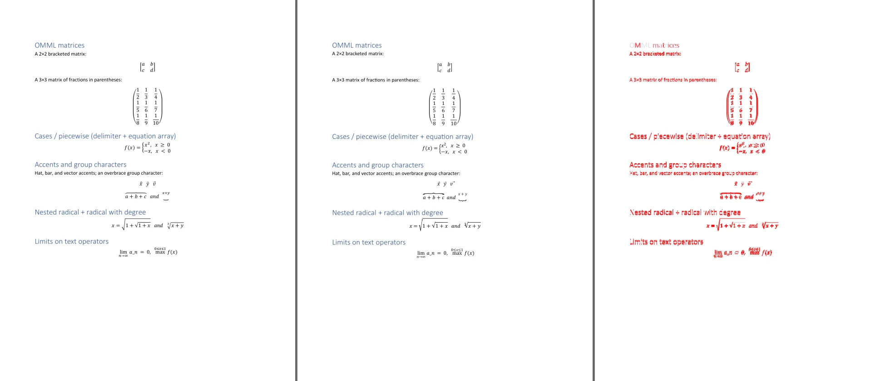

Building MS Word in a Web Browser
July 15, 2026
Check out the demo first
WordInWeb renders .docx files in the browser and edits them with near Microsoft Word visual parity.
It also ships as an off the shelf React component: npm install wordinweb, drop <\DocxView /> on a page, and boom, DOCX files in your app. Flip the editable flag and now it’s an editor. That’s the whole pitch.
This was inspired by the now-unavailable OSS Eigenpal because I could not find a lightweight package that let me view/edit DOCX files on the web with even a smidge of parity with how they would look in Microsoft Word. was also curious about its approach: throwing the OOXML standards at Codex and letting that spin.
One major side effect that I imagine they ran into was whack-a-mole bugs: fix one thing, break another. The OOXML standard is many thousands of pages and, from glancing at it and reading comments online, not so standard. Looping over this standard might yield a loose implementation that can render DOCX files, but it would effectively be the “Codex” flavor because there is so much nuance and the documentation is basically a gigantic unreliable narrator.
But I had a different idea for approaching the problem.
My hypothesis: we can get near Microsoft Word parity if we create a reliable test framework that lets an agent implement an OOXML renderer, feed the renderer a DOCX, export the file as a PDF, rasterize it to a PNG, and compare the pixel diff. Boom: an easy, quantifiable comparison with the same source input and two measurable outputs. Then we can more or less let the agent make changes -> evaluate -> make changes -> evaluate -> succeed.
Just brute-force parity without collapsing quality as we go.
I’m sure someone is thinking, “Congrats, you just learned xyz from first principles.” To that I say: bold of you to assume I learned anything.
Anyways, I am the proud owner of a Microsoft Word subscription, so I figured I’d get my money’s worth. I created, generated, and found a large set of fixture DOCX files that cover everything from equations and templates to tables and even Microsoft Word’s 3D renderings. I didn’t know those existed, but I am very excited to have discovered them.
I set up the evaluation harness and let that baby rip for about a week.
For what it’s worth, I leaned primarily on Fable for planning and architecture, but GPT 5.6-SOL was the real workhorse here. I also didn’t run out of Codex usage :). Thanks, Sam!
Project ground work
Just a quick note before we get into the juicy stuff. Credit: Fable.
The ground work is a layout engine that computes every position itself—every line break, every glyph, every table cell—and hands the browser absolutely positioned elements. The browser does zero layout of its own.
That architecture is what makes parity reachable quickly. Every position comes from the engine and the browser adds none, so there is a single number to drive toward: the pixel difference between our render and Word’s.
Why not render it how Google Docs renders things?
The big difference:
Google Docs: layout -> canvas drawing
WordInWeb: layout -> absolutely positioned DOM elementsIt’s easier for an LLM to work with positioned DOM than with a canvas. That’s basically it. A canvas would require maintaining a scene graph, spatial index, and repaint system. Trusting Fable’s infinite wisdom, I went with positioned DOM elements for the initial implementation because it was faster to build. Rewriting this to use canvas would clearly improve performance, but it would have made the evaluation framework much more complicated.
The training loop
The test and loop itself is actually very simple.
For every fixture:
- Word exports the
.docxto PDF. - WordInWeb renders the same file headlessly.
- Both rasterize to PNG at the same DPI and compare page by page.
The diff produces a score and an image. That gives an agent a closed loop with a definite end: render, diff, read the diff image, form a hypothesis about which Word rule is wrong, change the engine, and remeasure. Providing the source OOXML was also crucial. The number either drops or it doesn’t.
And I don't have to judge each attempt, so the loop can iterate on specifics until the score reaches near zero.

Measuring layout, weight, and color separately
A raw pixel diff turned out to be an incredibly suboptimal test. I initially neglected to ask, “What is the difference between a diff caused by color, font antialiasing, or structure?” The first few iterations floundered because the evaluation framework basically just kept saying “bad” and relied on the vision model’s perception, which was not quite capable enough to handle the layout piece.
So I broke the evaluation framework into three measurements:
- Layout overlap: Are the same words, lines, tables, and images in the same places? The test aligns the two pages, turns them into simple maps of content and empty space, and allows a small positional tolerance. Content with no nearby match counts as a structural difference. A separate vertical search catches text that wrapped onto a different line.
- Weight: Is the rendered content lighter or heavier than Word’s version? This catches problems such as the correct font appearing in the correct place but with thicker strokes. Text, images, table fills, and table rules are also measured separately where possible.
- Color: Does the visible ink have the same color as the Word rendering? This uses perceptual color distance, so a color error is measured as a color error rather than being mistaken for missing content.
Keeping these measurements separate made the parity loop much more useful. If a page had good overlap but the text was too bold, we could tune font rendering without disturbing pagination. If the weight was right but the color was wrong, we could work on color handling without treating the page as structurally broken. The report summarizes the dominant difference as clean, alignment, weight, color, or structural and links to the visual diff for inspection.
Eventually, we run into the issue that we are really evaluating the PDF conversion’s ability to render the Word document. That was an acceptable margin of error for my purposes because, at that point, we are fighting differences in how platforms rasterize pixels.
An eval optimization I wish I had added earlier was grouping fixtures into categories. For example, we now have general word processing, complex tables, math, other languages, formatting, graphics, and real world documents each with its own subscore in the eval harness. This allowed me to point agents and subagents at different categories. A coordinator could handle merging the subagent branches, and they usually didn’t step on each other’s toes.
A niche Word rule the file does not explain: raising text can add no height
Credit: Fable.
One math-heavy document contained three figures built in an unusual way. Each figure was an inline image followed by a tiny label on the same line. The label had w:position="320", which tells Word to raise it by 160pt.
The engine treated that as two heights added together: the roughly 248px image plus another 213px for the raised label. Each figure line became about 465px tall, even though the label stayed within the image’s vertical span. After three figures, the document had grown from Word’s 17 pages to 18.
The OOXML says how far to move the label, but it does not explain how that move affects the surrounding line. Measurements from Word’s PDF revealed the rule: the line must be only as tall as its tallest visible extent. If the raised text still fits inside the image’s existing height, it adds nothing. In other words, Word uses the larger of the image height and the raised text height; it does not add them together.
Implementing that rule restored the correct 17-page count. Structural error on the three figure pages fell from 88%, 90%, and 99% to 9%, 4%, and 17%. It is the kind of behavior that would be almost impossible to guess from the file alone, but becomes obvious once the parity test points to the exact pages and the Word export provides something measurable.
Looping framework for editing and performance
A DOCX viewer with Microsoft Word visual parity is meh. There are a bunch of ways to render DOCX on the web that are probably simpler and cleaner with a tiny backend process running OpenOffice. Also, I wanted more!
So I added editing after I had a baseline for visual parity. I often kicked off editing evaluations after introducing new fixtures that needed visual optimization. I think this was likely the most efficient approach, but editing is clearly a different beast altogether.
One of the first road bumps I hit when editing was performance. Keystrokes were so, so slow. Thus, the first evaluation metric was born: keypress latency! In retrospect, I got really lucky choosing this as my first evaluation. It wound up driving most of the downstream performance improvements, which could all be tied to a single KPI.
Initially, the naive pipeline reran everything on every keystroke: full model reparse, full document layout, and full DOM teardown and rebuild. On a 419-page contract, a mid-document keystroke took 5,005ms. The full breakdown is in the table below.
Profiling ruled out the easy suspects first: a warm text measurer saved about 15%, and math layout was 1.3ms across 38 equations. The cost was the line-break and pagination walk over every page, plus the DOM rebuild.
— GPT 5.6-SOL
The solution was simple in principle: after an edit, redo only the work that could have changed.
- Lay out only the affected part of the document. Pages before and after the change are reused instead of paginating the entire document again.
- Keep unchanged pages in the DOM. The browser updates only the changed pages instead of removing and recreating hundreds of page elements.
- Tell the layout engine where the edit happened. The editor marks the current block and its neighbors, avoiding a scan of the whole document.
The measured improvement was substantial, using the headless median over 20 keystrokes:
| Measurement | Before | After |
|---|---|---|
| Complete keystroke in a 419-page contract | 5,005ms | ~250ms |
| Mid-document layout | 1,158ms | 151ms |
| DOM rendering | 1,019ms | 53ms |
| Keystroke in a 17-page math document | 212ms | ~72ms |
But speed only matters if the optimized path produces the same document. As with visual parity, the question is: does fixing one bug introduce another? Whack-a-mole. As editing fixes are implemented, we add deterministic tests to the editing evaluation framework wherever possible. This way, we can fight regressions.
The killer combo was visual parity evaluation plus editing regression testing with direct feedback. These automatic evaluations give agents more than enough juice to narrowly fix issues and add features without blowing up what is actually a really complicated implementation.
As I mentioned earlier, editing is still a work in progress and probably will be for a long time. For example, I know a table inside a table works, but a table inside a table inside a table inside four more tables? Who knows! Probably another test case worth adding.
Having both the performance evaluation and the visual parity evaluation makes manual bug spotting and fixing much easier. If I notice behavior that would be very difficult to replicate in a programmatic test, I can simply describe the issue to the agent, and the agent will operate within the framework until the bug is fixed.
Where it stands
| Metric | Value |
|---|---|
| Word pages measured | 1,154 across 91 fixtures |
| Mean structural severity | 0.026% |
| Worst single page | 3.95% (probe3-thai p1) |
| Pages at or above 1% | 2 (Thai 3.95%, Indic 1.30%) |
Both pages above 1% use licensed fonts we cannot legally ship: Thai DokChampa—Fable really didn’t want to bootleg a font—and Tamil Vijaya approximated by a scaled Latha. The rest is within the antialiasing floor between two rasterizers drawing the same layout. Overall, I’m pretty pleased.
I can render and edit everything from California legal complaints to image catalogues to large tables and complex LaTeX math equations.
Room for improvement? Always.
Conclusion
Is this Microsoft Word on the web? No. Sorry, I know the title lied. There are probably edge cases I can’t even fathom—and I fathomed Microsoft Word’s 3D objects. But is it pretty good? I’d say yes. Being able to render and edit tables, math, and pictures seamlessly on the web is a win in my book. At least I haven’t found anything with this much coverage in the wild that you can use as an off the shelf react component.
It is also incredibly easy to continue improving this framework. Simply add the offending document fixture to the testing suite and iterate until that document is below the acceptable threshold, while ensuring none of the other documents break.
Improvement is now mostly a function of money and the time it takes for an agent to spin on the problem.
So what’s the takeaway? /goal is really powerful, but /goal with a meaningful, quantifiable target that an agent can evaluate against is like having superpowers. Honestly, I wish I had spent more time setting up the evaluation harness from the beginning.